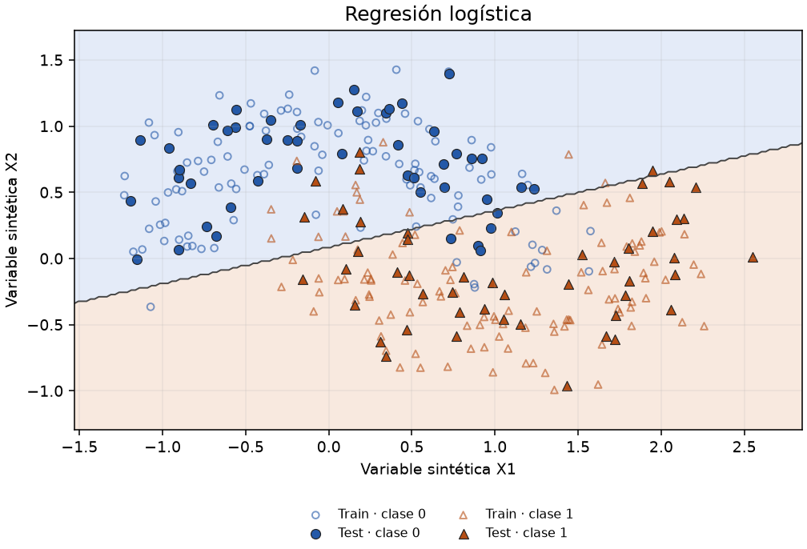

ClasificaciónIr a la práctica del repositorio →
Regresión logística
Accuracy test 0.875 · train 0.879 · F1 test 0.872
Modela P(clase 1) con una sigmoide sobre una combinación lineal.
Qué observar: La frontera es recta aunque los datos formen medias lunas. El fondo muestra clase, no probabilidad.
Parámetros y resultados
Pipeline(steps=[('standardscaler', StandardScaler()),
('logisticregression', LogisticRegression(max_iter=1000))])Predicciones de test (CSV)